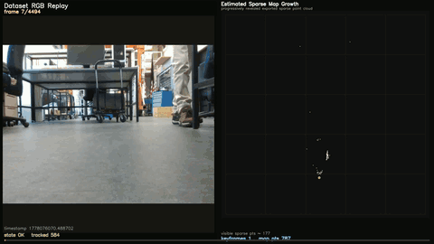
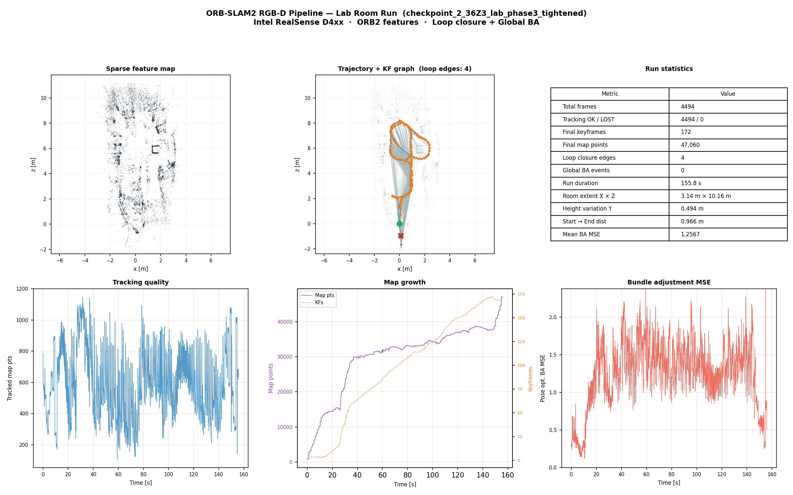

Real-time ORB feature tracking (left) and progressive sparse 3D map point cloud growth (right) during the lab room run on the Jetpack AI Racer with Intel RealSense D4xx
A structured Python implementation of an ORB-SLAM2-style visual SLAM pipeline for RGB-D input. The system tracks camera pose frame-to-frame using ORB features, builds a sparse 3D map through local mapping and bundle adjustment, and detects and corrects loops using a DBoW3 vocabulary with Sim3 geometry verification and essential graph optimization. The TUM RGB-D benchmark is used to validate trajectory accuracy. The pipeline was further validated in real-time on a Jetpack AI Racer mobile robot powered by a NVIDIA Jetson board with an Intel RealSense D4xx RGB-D camera - demonstrating reliable operation on live sensor data in a physical lab environment.
ORB-SLAM2 is the foundational visual SLAM system that most modern methods build on or compare against. Its C++ codebase is correct and efficient but dense - making it difficult to understand individual design decisions, experiment with components in isolation, or adapt for research. This Python implementation rebuilds the full pipeline with clear module separation between feature extraction, tracking, local mapping, loop closing, and optimization. The goal is a system that produces correct trajectories on real data while being transparent enough that every architectural decision is visible and modifiable.
The pipeline was deployed and validated in real-time on a Jetpack AI Racer mobile robot with an Intel RealSense D4xx RGB-D camera powered by a NVIDIA Jetson board. The lab room run demonstrates the system simultaneously tracking camera pose and building a sparse 3D feature map in a live physical environment - achieving zero tracking failures across the full run with 4 loop closure detections.
Feature extraction, frame processing, ORB descriptor computation
Local and global bundle adjustment, essential graph optimization
Bag-of-Words loop candidate retrieval with ORBvoc vocabulary
RANSAC-based geometric loop verification with Horn's method
RGB-D sensor providing synchronized color and depth for 3D initialization
Onboard compute on Jetpack AI Racer for real-time SLAM deployment
Freiburg sequences used for quantitative trajectory evaluation
Geometry utilities, rotation handling, evaluation tools
The most technically demanding aspect was integrating the DBoW3 retrieval pipeline with the Sim3 geometric verifier in a way that correctly handles the consistency check across multiple frames before accepting a loop. A single high-similarity BoW match is insufficient - the candidate must appear consistently across consecutive keyframes and then pass geometric verification with enough inlier matches under RANSAC before the loop correction is applied.
Real-time deployment on the Jetson also surfaced the importance of the local mapping thread design. Running local mapping synchronously blocks the tracker and causes frame drops in tight spaces where many new map points need triangulation. Managing the threading model carefully was essential for stable real-time operation.
Full run statistics from the real lab deployment - sparse feature map, trajectory with keyframe graph, tracking quality, map growth, and bundle adjustment MSE over time.

Summary image to be added - upload orb_summary.png to assets/projects/
Complete Python implementation with modular pipeline, evaluation tools, and deployment notes.
View on GitHub